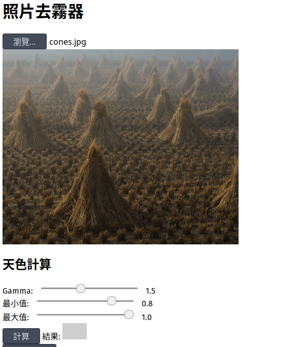
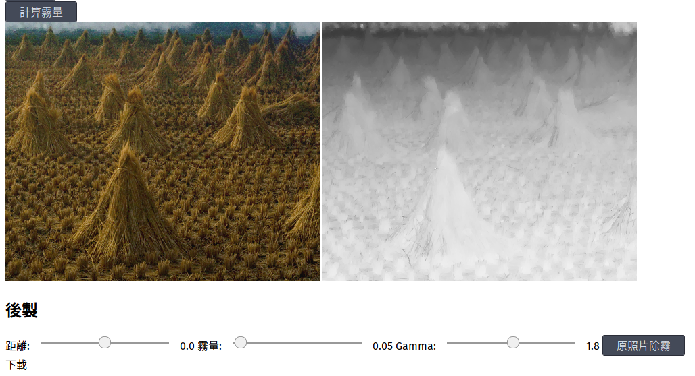

照片除霧器使用方法
依序進行下列步驟。由於還在alpha階段，如果不照步驟來會當掉。
選擇要上傳的檔案

天色計算
這裡有三個參數可以調：
- Gamma: 照片除霧前的亮暗。建議值：1.5
- 最小值：天色估計的最小值。建議值：0.1
- 最大值：天色估計的最大值。建議值：1.0
一般而言，調整 gamma 就可以達到除霧效果。如果調整完 gamma 照片一直太亮，可以把最小值加大到 0.5、0.7 或 0.8。最後按下「計算」以計算天色。
值得注意的是，通常天色會比目測的還要低許多。建議先試試比較低的最小值。
霧量計算

按下「計算霧量」。
此時會出現兩張圖片。左邊是除霧後的結果，右邊則是計算出的能見度圖。
後製
這裡有三個參數可以調：
- 距離：調整照片中物體離照相機的距離。通常維持是 0 就好。
- 霧量：調整完照片的霧量。0 即把所有的霧除去，>1 的數字可以加霧。
- Gamma：輸出照片的亮暗。建議設和前面 gamma 同一個值，也可依個人喜好整。
按「原照片除霧」
這個步驟需要約 2-5 分鐘。